Show the work
Managers fear not knowing what the AI sent, more than the writing itself.
Every campaign shows its stage. Every tool step is visible.
H1 System statusI designed Ruh's AI SDR so a sales manager can hand her outbound and still see, steer and take back every lead.
EngagePlan approved. First emails are going out.

I designed Ruh's first AI employee end to end, as its UX and product designer. She shipped, and 20 client teams pay for her, about $14K a month. From billing
The design comes down to five calls about what a sales manager sees and controls.
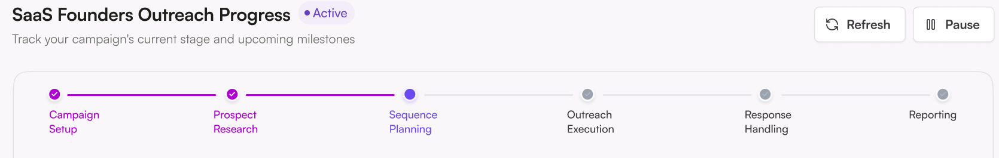
Tools like Apollo make a person do every step. Sarah does them all, so the design problem changed from doing to deciding.
Sales teams need more meetings than their SDRs can book. Hiring more SDRs is slow and costly, prospecting tools still need a person on every step, and AI SDRs that work out of sight ask a manager to trust what they can't see.
They want the output of an SDR without losing control of tone, targets or the CRM. A hidden agent puts their name at risk.
Monthly tiers only renew if Sarah shows value every week, and leads only count once they reach the team's CRM.
The work changed from doing outbound to directing it. The interface had to show what Sarah is doing and where a person steps in.
The brief: launch an AI SDR, replace manual outbound, fit the CRM teams already use, and ship fast. There was no PRD, so I turned it into the problem above.
I was the only designer on Sarah, working with one PM and the engineering team. I owned the experience from the first workflow map to the last QA pass.
Apollo and ZoomInfo are tools a person drives. Artisan is the closest rival, an AI SDR too. The difference I designed for is control.
Sarah started before Ruh had customers, so I used the sources I could reach and tested the flows myself as the manager would.
Apollo, ZoomInfo and Artisan for outbound. Glean and Manus for how agents show their work.
Found the gap: controlI mapped a human SDR's job end to end, from finding a lead to booking the meeting.
Found six stages, each ending in a decisionRecurring reviews of plans and screens with the PM and the client stakeholder.
Heard: Sarah can never be a black boxI ran every flow as the sales manager and scored it against Nielsen's ten heuristics.
Found unclear status and controlJira stories and acceptance criteria from engineering and the PM.
Found the hard limits: CRMs, inboxes, sending capsFigma against the live build, logged in shared bug sheets.
Kept the shipped product true to the design| Capability | Apollo | ZoomInfo | Artisan | Sarah |
|---|---|---|---|---|
| Finds and enriches leads | Strong | Strong | Partial | Partial |
| Runs outreach alone | Missing | Missing | Strong | Strong |
| Sorts replies | Partial | Missing | Unclear | Strong |
| Human takeover | Partial | Missing | Unclear | Strong |
| CRM as source of truth | Strong | Strong | Unclear | Partial |
Competitor study with the PM during the project. Ratings are my reading of each product.
A sales manager answers for every email sent in the company's name.


When I need more meetings than we book, I want an AI I can brief and watch, so pipeline grows, reputation stays safe.
When a prospect objects or asks a question, I want to step in with full context, so I don't lose a warm lead.
When a lead is qualified, I want it to appear in our CRM, so sales works it without retyping.
Secondary: workspace admin or RevOps. Approves the CRM and owns the data: one source of truth, no duplicate leads, limits and warm-up visible.
Four insights became four rules I checked every screen against.
Managers fear not knowing what the AI sent, more than the writing itself.
Every campaign shows its stage. Every tool step is visible.
H1 System statusRivals made a person do every step, or left the person out.
Sarah drafts the plan. Nothing runs until a person says yes.
H3 User controlA lead outside the CRM never gets worked. Duplicates break trust.
One default CRM. Sarah writes to it and nowhere else.
H5 Error preventionThe moments that matter are replies: an objection, a question, a yes.
Any thread switches to Manual with its full context.
H3 User controlManagers don't need another tool. They need visibility, control and one place for their leads.
The job, the map and the paths. Drawn from my workflow map and the shipped screens.
What the manager does and sees, and what Sarah does behind the line.
Where Sarah lives in Ruh, and every page a manager can open.
The six objects Sarah works with, how they connect, and the labels every screen shares. Modelled on the objects a CRM already uses.
Lives in Campaigns list, Overview
Is it running?Lives in Chat, Campaign info
Who are we after?Lives in Prospects tab
Who did she find?Lives in Sequence tab
What will she send?Lives in Responses tab
What needs me?Lives in Your default CRM
Did it land?DraftActivePausedCompleted
AutomatedManual
PositiveScheduledObjectionNeutralOut of OfficeComplexNo response
Three paths, one line. Diamonds are where a person decides.
Drawn from my workflow map and the competitor study, before any screen. Severity is my judgement. Each decision below names the risk it answers.
Sarah works out of sight, so nobody trusts her output
Setup feels like configuring a tool, not hiring a teammate
Leads land in the wrong CRM, or in several
Replies arrive with no clear next step
The manager can't tell who is in control
Taking over loses the conversation's context
Sending too fast burns the company's domain
Briefing Sarah in chat feels natural
With Sarah, only the decisions do. Assumption-based journey, to validate with managers.
Each one answers a risk. Each shows the options, the choice, what it cost and who decided.
Answers the risk: Setup feels like configuring a tool, not hiring a teammate.
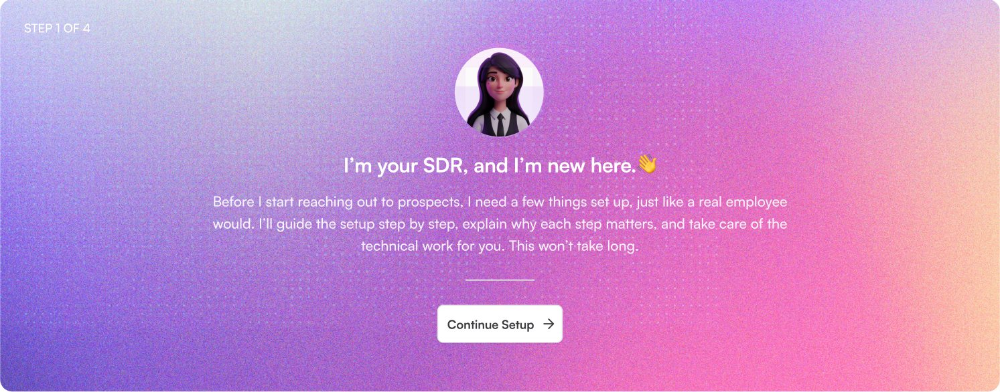
H5 Error preventionProposed by me, agreed with the PM
Answers the risk: Leads land in the wrong CRM, or in several.
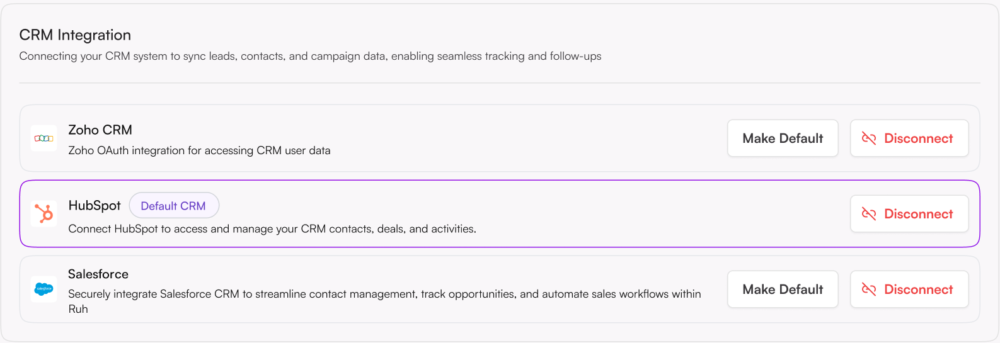
H5 Error preventionProposed by me, agreed with the PM
Answers the risk: Replies arrive with no clear next step.
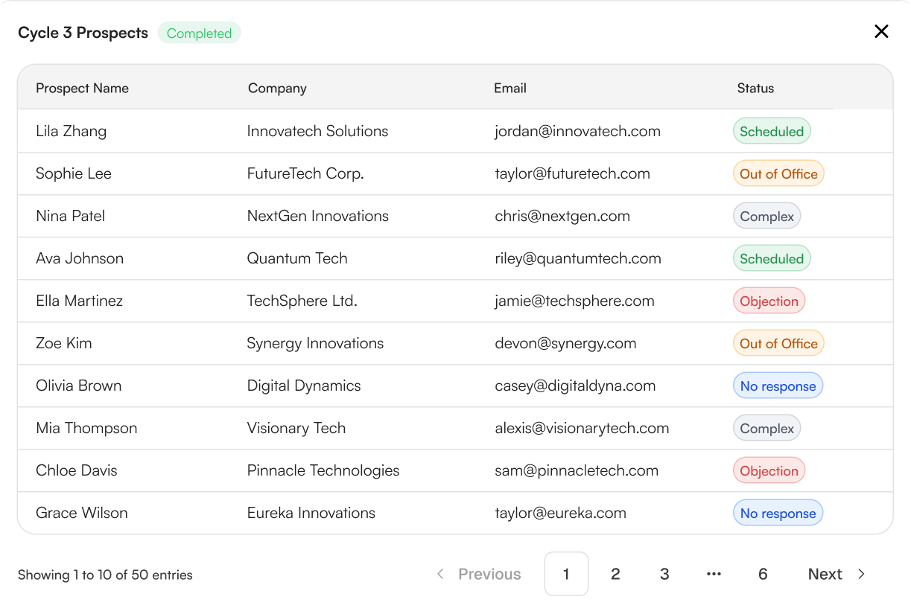
123H2 Real-world languageProposed by me, agreed with the PM
Answers the risk: The manager can't tell who is in control, and taking over loses context.
 123
123
H3 User controlProposed by me, agreed with the PM
Answers the risk: Sarah works out of sight, so nobody trusts her output.
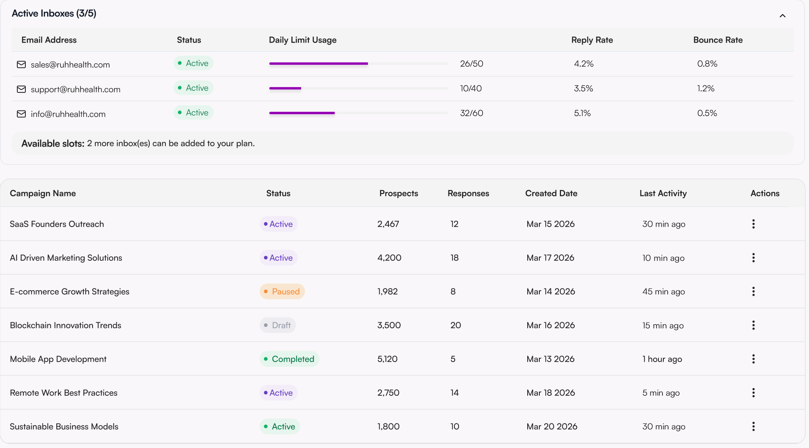
45H1 System statusSix-stage tracker made with the PM after studying Apollo, Artisan and ZoomInfo
The five decisions, together in the chat she runs in. She asks, proposes, waits for your yes, then shows her work.
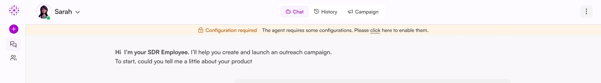
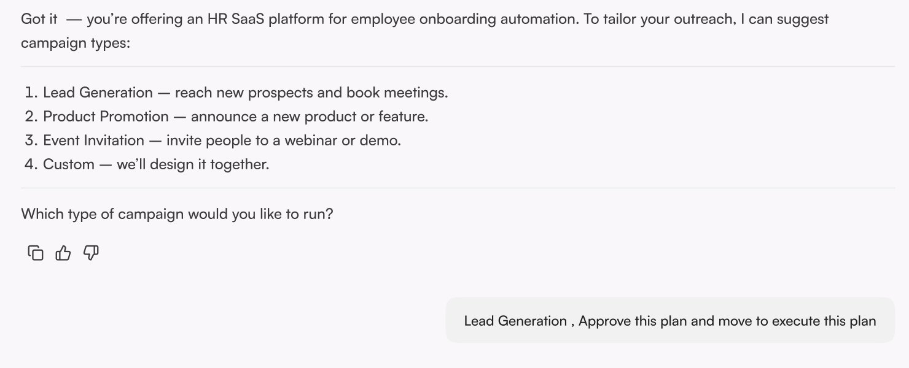
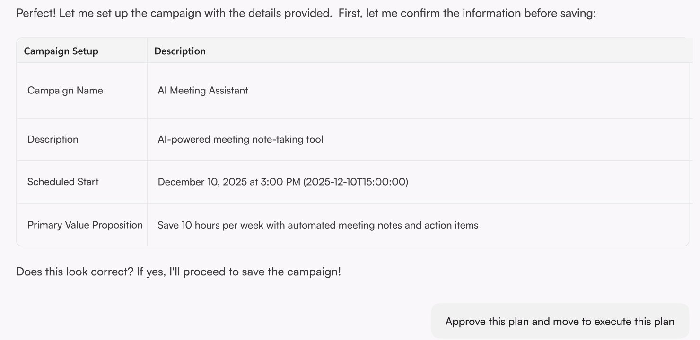
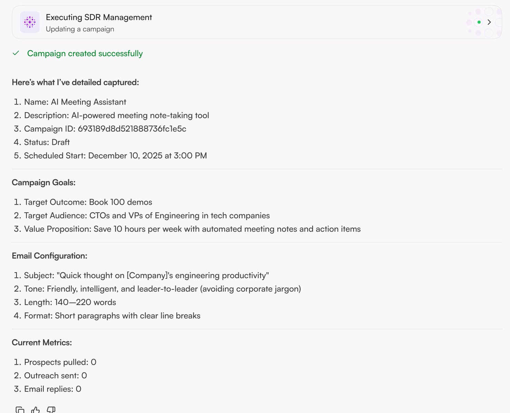
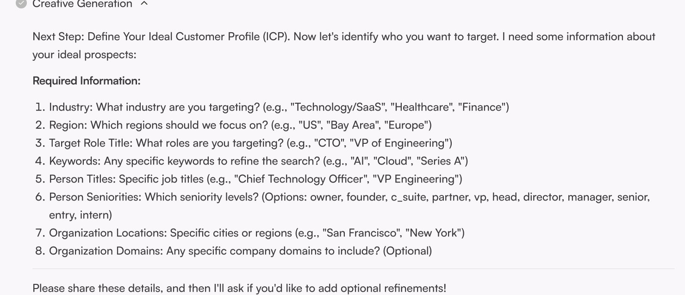
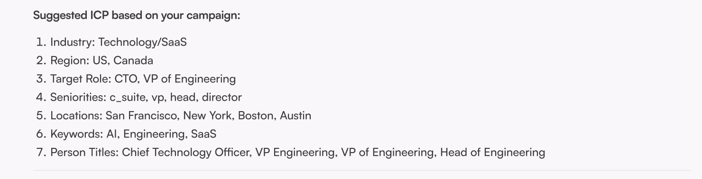
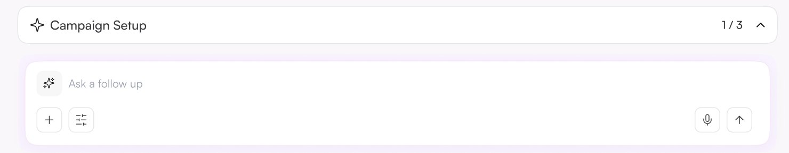
A sample conversation from my design file. The names and numbers inside it are placeholder data.
Setup, chat campaigns, campaign pages, takeover, metrics and CRM settings all shipped.
Estimates are my read of usage, not audited. Numbers inside the screens are sample data.
Our sales automation runs nicely with Sarah.
Enrich the prospects more.
Make the draft emails more personal.
Clients stopped asking what Sarah was doing. They started asking for better leads and emails.
Shared by the PM from calls with paying clients. Quotes are paraphrased.
How I'd judge her, stage by stage.
North star: qualified meetings per campaign. Goal 10+ in 30 days.
What I'd test first now that teams use Sarah, and what would prove me right.
5 sales managers, moderated, thinking aloud. One task: get from Home to a live campaign.
Right if 4 of 5 finish setup alone, in about 7 minutes6 to 8 sales managers and RevOps leads. What they check before approving a plan, and what makes them take over.
Right if the plan table answers their first questionsReal reply examples, 10 participants. Pick the next step from Sarah's category alone.
Right if most pick the step Sarah would suggestPlanned studies. None of these have been run yet, and the targets are mine.
Every part of her maps to a CRM capability. Each row points to where you saw it.
Not covered: deals, accounts, tasks, de-duplication.
CRM sync status was never designed. This is the concept I'd build next. Measure: positive leads in the CRM within 5 minutes.
Concept, not shipped.
Sarah, Ruh's AI SDR. Designed by Nitin, UX and product designer, with the PM and engineering.
Ava's lead is in your CRM.
Connect on LinkedIn Happy to walk you through Sarah in person.